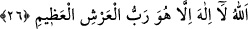
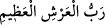
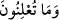

26. (Halbuki) büyük Arş’ın sâhibi olan Allah’tan başka ilah yoktur.
Arş’ın “büyük” olarak isimlendirilmesi, Allah’ın yarattığı cisimlerin en büyüğü
olduğundan dolayıdır. Belkıs’ın arşının/tahtının büyüklüğü, emsâli olan kralların
arşlarının büyüklüğüne nisbetledir. Allah’ın arşının büyüklüğü ise göğe ve yere
nisbetledir. Bu iki büyüklük arasındaki fark da pek büyüktür.
Sühâ yıldızının parlak güneşe nisbeti ne olabilir ki?
el-Müfredât’ta der ki: “Allah Teâlâ’nın arşı insanların sadece ismi dışında gerçek
mâhiyetini bilemedikleri şeylerdendir.”
Bil ki Allah Teâlâ’nın hüdhüdden naklettiği “göklerde ve yerde gizleneni açığa
çıkaran…” (25. âyet) sözünden buraya kadar olan kısım, yine onun söylediği “Ben,
senin bilmediğin bir şeyi öğrendim.” (22. âyet) sözüne dâhil değildir. Bunlar ancak
onun Süleyman (a.s.)’dan aldığı ilim ve ma’rifetlerdendir. O bunu kendi bulunduğu hâli
açıklamak ve din konusundaki sağlamlığını ortaya koymak için dile getirmiştir. Bütün
bunlar, Süleyman (a.s.)’ın kalbini verdiği haberi kabûle çevirmek, azmini Belkıs ile
gazâya ve onun hâkimiyetini kendisine boyun eğdirmeye yöneltmek içindir.
Bir hadîste şöyle buyrulmuştur: “Hüdhüd kuşunu öldürmeyi size yasaklıyorum.
Çünkü o, suyun yakın ve uzaklığını göstermek için Süleyman (a.s.)’ın rehberi idi.
Yeryüzünde Allah’a ibâdet edilmesini sevdi ve şöyle dedi: “Sebe’den sana çok doğru
(ve önemli) bir haber getirdim. Gerçekten, onlara (Sebe’lilere) hükümdarlık eden
…. bir kadınla karşılaştım….” (en-Neml, 27/22)[58]
Anlatılır ki Hâfız, imam, âlim Ebû Kılâbe Abdülmelik b. Muhammed Rakkâş’ın
annesi, kendisine hâmile iken sanki bir hüdhüd doğurduğunu gördü. Ona: “Rüyan sâdık
ise çok namaz kılan bir çocuk doğuracaksın.” denildi. O da Ebû Kılâbe’yi dünyaya
getirdi. Büyüyünce her gün dört yüz rekat namaz kılmaya başladı. Altmış bin hadîs
ezberledi. 276 yılında da vefat etti.
Burası, yâni “
” sözü, ittifakla secde mahallidir. Nitekim Fethu’r-
Rahmân’da böyle geçmektedir.
Kâşifî der ki: “Bu, İmam Azam’ın kavline göre sekizinci, İmam Şâfiî’nin görüşüne
göre dokuzuncu secdedir. Fütûhât’ta buna “secde-i hafî” denmektedir. Secde yeri
ihtilâflıdır. Bazıları “
” âyetini okuyunca secde eder. Bir kısmı ise “
” âyetini tilâvet ettikten sonra secde eder.”
Hak sevdâlısı isen başını secdeye koy
Zira secde Hazret-i Allah’a yakınlaşmaya sebeptir